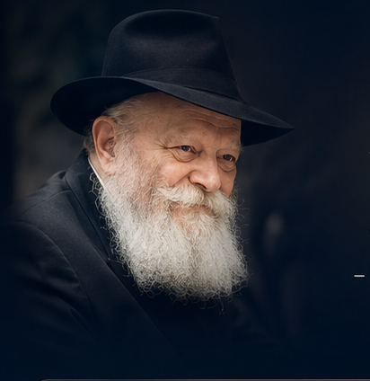

השפעה האמיתית של השליחות
בזכות השליחות, הטכנולוגיה והשותפים לדרך –
אנחנו לא רק מגיעים לעוד יהודים,
אנחנו יוצרים קשרים שנשארים.
כל מכפר הוא סיפור. כל סיפור הוא נשמה.
השליחות נמשכת. ההשפעה מתרחבת. העתיד נבנה — יחד.